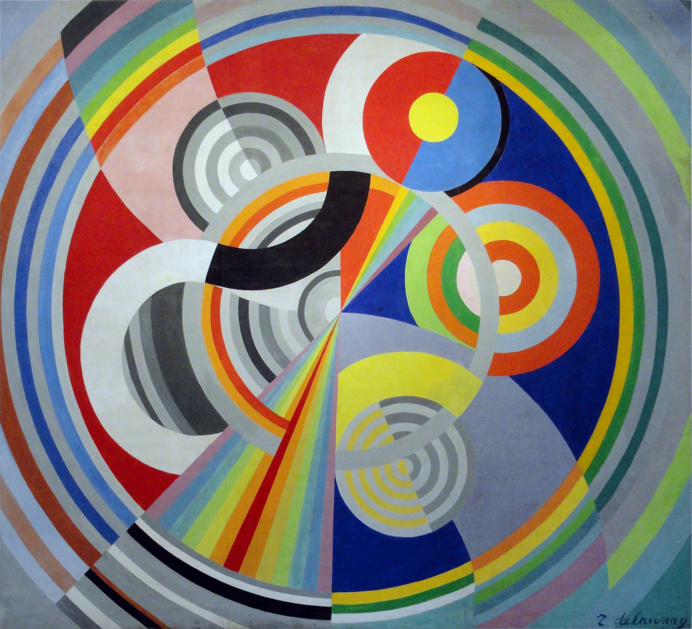

Hyperreals: Απειροστά και άπειροι αριθμοί#

Ο πίνακας Ρυθμός Νο 1 του Robert Delaunay.#
Πρελούδιο#
Η αλήθεια είναι ότι πάντα με σαγήνευαν οι παράξενες ιδέες, αυτές που έχουν έναν βαθύ και ανατρεπτικό χαρακτήρα. Έτσι, όταν για πρώτη φορά ανακάλυψα το βιβλίο του H. Jerome Keisler, Elementary Calculus: An infinitesimal approach ενθουσιάστηκα. υπέρμετρα, θα έλεγε κανείς. Για την ακρίβεια, μου είχε φανεί - και ακόμα μου φαίνεται, δηλαδή - τόσο συναρπαστικό το νέο αυτό σύμπαν που περιγράφεται μέσα στο βιβλίο που για πολλά βράδια εκείνο το καλοκαίρι επέστρεφα σπίτι από κάποια βόλτα με μόνη μου σκέψη να συνεχίσω τη μελέτη από εκεί που την είχα αφήσει.
Ωστόσο, τόσην ώρα διαβάζετε αμπελοφιλοσοφίες για κάτι που ενδεχομένως δεν έχετε ξανακούσει, οπότε ας πάρουμε τα πράγματα από την αρχή. Αρχικά, όπως γνωρίζουμε, οι πραγματικοί αριθμοί περιγράφονται από κάποια αξιώματα - διαβάστε εδώ αρκετά περισσότερα για το πιο περιβόητο από όλα τα αξιώματα - τα οποία μας δίνουν τις βασικές τους ιδιότητες, από τις οποίες μπορούμε να αποδείξουμε κάθε γνωστό μας θεώρημα που αφορά τους πραγματικούς αριθμούς. Από αυτά, τα 12 πρώτα αφορούν τις δύο πράξεις μεταξύ των πραγματικών αριθμών - πρόσθεση και πολλαπλασιασμό - καθώς και τη σχέση της διάταξης \(<\) , ενώ το δέκατο τρίτο, το αξίωμα της πληρότητας, μας εξασφαλίζει ότι η ευθεία μας δεν έχει «τρύπες». Μάλιστα, το αξίωμα της πληρότητας έχει κομβικό ρόλο και στην ιστορία των μαθηματικών, μιας και εκφράζει με αυστηρό τρόπο στη μαθηματική γλώσσα μία κοινή εικόνα για την ευθεία των πραγματικών αριθμών - ότι, δηλαδή, δεν έχει «τρύπες» - ενώ μας επιτρέπει, ταυτόχρονα, να μιλήσουμε με πολύ σαφή τρόπο για έννοιες που για χρόνια μεταχειριζόμασταν στα μαθηματικά ελαφρώς «χαλαρά» και μη αυστηρά.
Ένα τέτοιο πολύ χαρακτηριστικό παράδειγμα είναι η παράγωγος. Επίσημα, ο ορισμός της παραγώγου σε ένα σημείο είναι ο εξής:
</p>
</p>
Μία συνάρτηση \(f\) είναι παραγωγίσιμη σε ένα σημείο \(a\) του πεδίου ορισμού της αν υπάρχει το παρακάτω όριο και είναι πραγματικός αριθμός:
Αν υπάρχει, θα το συμβολίζουμε με \(f'(a)\) και θα το ονομάζουμε παράγωγο της \(f\) στο \(a\) .
Δεδομένου τώρα ότι ο ορισμός του ορίου είναι επίσης αυστηρός και πατάει γερά στα 13 αξιώματα των πραγματικών αριθμών, όλα είναι καλά και τακτοποιημένα. Ωστόσο, παλιότερα - π.χ. την εποχή του Νεύτωνα και του Leibniz ή τον καιρό του Euler - δεν ήταν τόσο αυστηρά καθορισμένες οι περισσότερες κομβικές έννοιες των μαθηματικών καθώς επίσης δεν ήταν θεμελιωμένη η θεωρία των πραγματικών αριθμών με τον αξιωματικό τρόπο που είναι σήμερα. Έτσι, συναντά κανείς σε παλιότερα χειρόγραφα διάφορες έννοιες «απειροελάχιστων» - ή αλλιώς, απειροστών - ποσοτήτων οι οποίες παίζουν καθοριστικό ρόλο στους περισσότερους συλλογισμούς που αναπτύσσονται εκεί.
Όμως, τι εννοούμε λέγοντας απειροστές ποσότητες - ή, πιο απλά, απειροστά; Η κεντρική ιδέα είναι ότι τα απειροστά δεν είναι πραγματικοί αριθμοί - ωστόσο «συνδιαλέγονται» και «σχετίζονται» στενότατα μαζί τους, όπως θα δούμε παρακάτω - αλλά απλώς μη μηδενικές ποσότητες που βρίσκονται οσοδήποτε κοντά στο \(0\) . Έτσι, για παράδειγμα, μπορούμε να θεωρήσουμε ένα θετικό απειροστό \(\varepsilon>0\) το οποίο «εξ ορισμού» θα ικανοποιεί την ανισότητα \(\varepsilon<x\) για κάθε θετικό πραγματικό αριθμό \(x\) .
Συνεχίζοντας λίγο την σχεδόν παράλογη ιδέα των απειροστών, κάνουν πολλές πράξεις - όπως η παραγώγιση - πολύ πιο εύκολη. Ας θυμηθούμε για αρχή, ότι το όριο του ορισμού της παραγώγου που δώσαμε παραπάνω μπορούμε να το αντικαταστήσουμε με το εξής όριο:
Μάλιστα, σε αρκετές περιπτώσεις αυτό το όριο διευκολύνει αρκετά τις πράξεις μας. Ας θεωρήσουμε τώρα μία απλή συνάρτηση, ας πούμε την \(f(x)=x^2\) και ας σταθεροποιήσουμε ένα \(a\in\mathbb{R}\) . Αντί να υπολογίσουμε την παράγωγο της \(f\) στο \(a\) με το πατροπαράδοτο όριο, θα ακολουθήσουμε την εξής πορεία - που, ταυτόχρονα, ερμηνεύει και τον ορισμό της παραγώγου, κατά κάποιον τρόπο:
Θεωρούμε ένα απειροστό \(\varepsilon\neq0\) και μεταβάλλουμε το \(a\) κατ” αυτό, παίρνοντας έτσι το \(a+\varepsilon\) - μόλις προσθέσαμε έναν αριθμό με ένα απειροστό.
Υπολογίζουμε την τιμή της \(f\) στο \(a+\varepsilon\) η οποία, εν προκειμένω είναι \(f(a+\varepsilon)=(a+\varepsilon)^2=a^2+2a\varepsilon+\varepsilon^2\) - εδώ αποθρασυνθήκαμε και πολλαπλασιάσαμε απειροστά με αριθμούς αλλά και μεταξύ τους.
Στη συνέχεια, υπολογίζουμε την προκύπτουσα μεταβολή στην τιμή της \(f\) ως εξής: \(f(a+\varepsilon)-f(a)=a^2+2a\varepsilon+\varepsilon^2-a^2=2a\varepsilon+\varepsilon^2\) .
- Έπειτα, αφού έχουμε πάρει φόρα, υπολογίζουμε και τον λόγο μεταβολής:
\(\frac{f(a+\varepsilon)-f(a)}{a+\varepsilon-a}=\frac{f(a+\varepsilon)-f(a)}{\varepsilon}=\frac{2a\varepsilon+\varepsilon^2}{\varepsilon}=2a+\varepsilon\) - εδώ δεν ντραπήκαμε μέχρι και να διαιρέσουμε με ένα απειροστό.
- Τέλος, ε, αφού απειροστό ήταν το \(\varepsilon\) , τι το θέλουμε εκεί πέρα; Εξαφανίζουμε λοιπόν, ανερυθρίαστα από το τελικό μας αποτέλεσμα το απειροστό και γράφουμε:
\(\frac{f(a+\varepsilon)-f(a)}{\varepsilon}=2a\) .
Και κάπου εδώ σταματάμε γιατί μόλις βρήκαμε την παράγωγο της \(f\) στο \(a\) .
Συνοψίζοντας, ξεκινήσαμε με μία φαινομενικά ανεδαφική έννοια - το απειροστό -, της φερθήκαμε σαν να είναι ένας πραγματικός αριθμός (την χρησιμοποιήσαμε κανονικά σε τόσες πράξεις, άλλωστε), μέχρι που διαιρέσαμε μαζί της και, στο τέλος απλά την εξαφανίσαμε σαν να ήταν ίση με το μηδέν - ενώ στην αρχή είπαμε ξεκάθαρα ότι το απειροστό μας δεν είναι ίσο με το μηδέν. Ωστόσο, το αποτέλεσμα που βρήκαμε ήταν ολόσωστο!
Ένας άλλος τρόπος σκέψης#
Τα απειροστά, όπως είδαμε, αν υπάρχουν, είναι σίγουρα μυστήρια πλάσματα. Ωστόσο, δεν είναι μακριά από τη διαίσθησή μας. Θυμηθείτε λίγο πώς προσπαθούμε να ορίσουμε στο σχολείο, πριν φτάσουμε στην τρίτη λυκείου, τη στιγμιαία ταχύτητα ενός σώματος στη φυσική ή μίας αντίδρασης στη χημεία. Ξεκινάμε με ένα μέγεθος \(f\) - είτε αυτό είναι η θέση ενός σώματος είτε η συγκέντρωση ενός αντιδρώντος - και θεωρούμε μία πάαααρα πολύ μικρή μεταβολή του χρόνου, ας την πούμε \(dt\) . Σε αυτήν τη μικρή μεταβολή του χρόνου παρατηρείται «μοιραία» και μία πάαααρα πολύ μικρή μεταβολή του μεγέθους \(f\) , ας την πούμε \(df\) , οπότε, παίρνοντας το πηλίκο τους \(\frac{df}{dt}\) , βρίσκουμε τη ζητούμενη ταχύτητα - θεωρώντας, ίσως, σε κάποιο σημείο ότι το \(dt\) είναι απειροελάχιστο (aka απειροστό).
Υιοθετώντας το σκεπτικό των απειροστών που είδαμε παραπάνω μπορούμε, αν αφεθούμε και ξεχάσουμε για λίγο όλη τη μαθηματική αυστηρότητα - όπως κάναμε παραπάνω - να υπολογίσουμε διάφορες παραγώγους με την παραπάνω μέθοδο, όλες σωστά - δεν έχετε παρά να το δοκιμάσετε. Το βασικό «τρυκ» που μας το επιτρέπει αυτό είναι να αγνοήσουμε όρους που περιέχουν απειροστά στο τελικό αποτέλεσμα. Φαίνεται, λοιπόν, η παραπάνω «μέθοδος» να δίνει αποτελέσματα ορθά και να μην είναι απλά λόγια του αέρα. Μπορούμε, μάλιστα, να αξιοποιήσουμε - με τις όποιες αβαρίες χρειάζεται - τα απειροστά και να δώσουμε αποδείξεις κομβικών θεωρημάτων πολύ πιο εύκολα από ό,τι με τους αυστηρούς όρους που έχουμε συνηθίσει - θα δούμε τέτοια παραδείγματα στη συνέχεια της σειράς.
Ανεξάρτητα, όμως, από το αν είναι ή όχι εύλογη - ή ευλογοφανής - η παραπάνω προσέγγιση, εγείρονται σοβαρές ενστάσεις ως προς τουλάχιστον ένα σημείο του συλλογισμού μας. Ξεκινήσαμε με ένα \(\varepsilon\neq0\) - είτε αυτό είναι απειροστό είτε όχι, μικρή σημασία έχει - και στο τέλος το αντιμετωπίσαμε σαν να ήταν ένα μηδενικό - κυριολεκτικά. Με άλλα λόγια, είναι σαν να υπονοούμε ότι \(0\neq0\) . Αυτό ακριβώς ήταν κι ένα από τα σημεία που αποτελούσε διαχρονικά σημείο έριδος μεταξύ επιφανών επιστημόνων ανά τους αιώνες - το πιο γνωστό ίσως τέτοιο παράδειγμα αποτελεί η κριτική του G. Berkeley στον Leibniz και στα «κακώς κείμενα» των απειροστών στο The Analyst, έργο που έδωσε νέα ώθηση στη θεμελίωση των βασικών εννοιών των μαθηματικών σε πιο στέρεες βάσεις. Κι εδώ έρχεται ένα γόνιμο ερώτημα: μπορούμε όλα τα παραπάνω να τα γράψουμε με αυστηρά μαθηματικά ή είναι απλά μία διαίσθηση που ως τέτοια, συχνά βγαίνει σωστή αλλά μπορεί και να λαθέψει - και άρα, απλά ως τώρα έχουμε στο πλευρό μας τη θεά Τύχη;
Πριν ξεκινήσουμε μία απόπειρα θεμελίωσης των παραπάνω θα αντιτάξουμε ένα διαισθητικό επιχείρημα υπέρ της ύπαρξης - με κάποιον τρόπο - των απειροστών. Αν όλα αυτά δεν είναι όντως κάποιο αυστηρό έρεισμα από πίσω, θα περίμενε κανείς ότι μέσα στους σχεδόν δύο αιώνες που χρησιμοποιήθηκαν συστηματικά από τους μαθηματικούς εκείνων των καιρών, θα είχαν βρεθεί αποτελέσματα που με τα σημερινά μας, αυστηρώς θεμελιωμένα, μαθηματικά ενδεχομένως να μην επαληθεύονταν. Ωστόσο, κάτι τέτοιο δεν συνέβη. Για την ακρίβεια, ήταν άλλοι οι λόγοι που οδήγησαν στη συστηματική αναζήτηση μίας μεθόδου πιο στέρεα θεμελιωμένης από τα απειροστά:
αφενός, η ένσταση ότι τα απειροστά πότε συμπεριφέρονται ως μη μηδενικοί αριθμοί και πότε ως απλά μηδενικά,
αφετέρου, το γεγονός ότι δεν είχε ξεκαθαριστεί το status τους σε σχέση με τους συνήθεις πραγματικούς αριθμούς.
Και τα δύο είναι αρκετά «μελανά» σημεία για μία εν γένει αυστηρή επιστήμη όπως τα μαθηματικά και δικαίως οδήγησαν στην απόρριψη των απειροστών καίτοι ήταν καθόλα αποτελεσματικά εργαλεία για τον απειροστικό λογισμό. Είναι ώρα, λοιπόν, να δούμε αν μπορούμε να βρούμε μία θέση στο σύμπαν των μαθηματικών και γι” αυτά;
Ο κόσμος των απειροστών#
Είναι ώρα να βάλουμε τα περίεργα αυτά «πλάσματα» στο μικροσκόπιο. Ως τώρα, έχουμε αποτυπώσει μέσα από διάφορα παραδείγματα κάποιες ιδέες για το πώς μπορεί να μοιάζει ένα απειροστό, περιγράφοντάς το μέσα από τη συμπεριφορά του - συμμετέχει σε πράξεις τόσο με πραγματικούς όσο και με άλλα απειροστά, είναι λίγο μηδέν και λίγο μη μηδενικό κ.λπ. Ωστόσο, όλα αυτά θα μπορούσαν κάλλιστα να είναι αποκύημα της φαντασίας μας. Ας προσπαθήσουμε, λοιπόν, να εντοπίσουμε διάφορες ιδιότητες των απειροστών που υπονοούνται από τον τρόπο με τον οποίον τα μεταχειριζόμαστε.
Αρχικά, με βάση όσα είδαμε παραπάνω, μάλλον τα απειροστά δεν είναι πραγματικοί αριθμοί, αλλά κάποια άλλα «όντα» που, τρόπον τινά, ζουν ανάμεσά τους - στην πορεία της σειράς θα φωτιστεί περισσότερο αυτό. Για την ακρίβεια, θα ονομάσουμε \(I\) το σύνολο των απειροστών και θα υποθέσουμε ότι \(I\neq\varnothing\) , δηλαδή ότι υπάρχει τουλάχιστον ένα (θετικό) απειροστό - ειδάλλως, δε θα είχε νόημα η συζήτησή μας. Από εδώ κι εμπρός, συμφωνούμε ότι στα πλαίσια της συζήτησής μας ένα απειροστό θα είναι ένα στοιχείο, \(\varepsilon\) , το οποίο δεν είναι πραγματικός αριθμός, ωστόσο μπορεί να συγκριθεί μαζί τους (θα το εξηγήσουμε αμέσως αυτό) και ισχύει ακριβώς ένα από τα εξής:
\(\varepsilon>0\) και \(\varepsilon<r\) για κάθε \(r\in\mathbb{R}\) με \(r>0\) ,
\(\varepsilon<0\) και \(\varepsilon>r\) για κάθε \(r\in\mathbb{R}\) με \(r<0\) .
Πιο συνοπτικά, μπορούμε να πούμε ότι \(0<|\varepsilon|<r\) για κάθε \(r>0\) , αν ορίσουμε την απόλυτη τιμή ενός απειροστού ανάλογα με αυτή ενός πραγματικού αριθμού.
Πριν προχωρήσουμε, θα κάνουμε μία σύμβαση σχετικά με τα απειροστά. Εκτός από το τουλάχιστον ένα (θετικό) απειροστό που έχουμε θεωρήσει, θα υποθέσουμε ότι και το \(0\) είναι απειροστό - θα δούμε στην πορεία ότι θα μας φανεί ιδιαίτερα εξυπηρετική αυτή η σύμβαση. Έτσι, έχουμε στα χέρια μας ένα τετριμένο απειροστό, το μηδέν, κι ένα μη τετριμμένο θετικό απειροστό.
Στο διά ταύτα, τώρα. Όπως είδαμε και παραπάνω, τα απειροστά συμμετέχουν σε πράξεις τόσο μεταξύ τους όσο και με πραγματικούς αριθμούς και μάλιστα φαίνεται ο Leibniz και οι σύγχρονοί του να τα χρησιμοποιούν διατηρώντας όλες τις ιδιότητες των πράξεων μεταξύ πραγματικών αριθμών. Με άλλα λόγια, φαίνεται σαν οι πραγματικοί και τα απειροστά να «συμβιώνουν» μέσα σε ένα ευρύτερο σύνολο αριθμών \(H\) με \(\mathbb{R}\subseteq H\) και \(I\subseteq H\) . Μάλιστα, αφού όλες οι ιδιότητες των πράξεων εφαρμόζονται χωρίς κανέναν ενδοιασμό, μπορούμε κι εμείς να υποθέσουμε ότι το \(H\) θα έχει αλγεβρική δομή παρόμοια με του \(\mathbb{R}\) - θα είναι δηλαδή, όπως έχουμε ξαναπεί, ένα σώμα. Συνεπώς, στο \(H\) ορίζονται και δύο πράξεις - πρόσθεση \((+)\) και πολλαπλασιασμός \((\cdot)\) - οι οποίες θα επεκτείνουν τις ήδη γνωστές μας πράξεις από τους πραγματικούς αριθμούς - δηλαδή, θα ισχύουν όπως τις ξέρουμε για πράξεις μεταξύ πραγματικών αριθμών και θα έχουν νόημα και για πράξεις μεταξύ στοιχείων του \(H\) . Αναλόγως, θεωρούμε ότι στο \(H\) μπορούμε να επεκτείνουμε και τη διάταξη του \(\mathbb{R}\) έτσι ώστε αυτή να είναι ολική - δηλαδή όλα τα στοιχεία του \(H\) μπορούν να συγκριθούν μεταξύ τους - αυτό μας επιτρέπει να πούμε π.χ. ότι \(\varepsilon>0\) κ.λπ.. Έτσι, η πρώτη «βαρβάτη» υπόθεση που κάνουμε εξερευνώντας τον κόσμο των απειροστών είναι ότι το \(H\) είναι ένα ολικά διατεταγμένο σώμα.
Ας κάνουμε τώρα και μία φιλολογικού περιεχομένου παρατήρηση. Τόσην ώρα, κάνουμε λόγο για απειροστά (πληθυντικός), ωστόσο, πέρα ίσως από ένα (μη μηδενικό) απειροστό \(\varepsilon\) - του οποίου την ύπαρξη δεχόμαστε, αναγκαστικά - δε γνωρίζουμε κάτι για κάποιο άλλο απειροστό. Πριν λοιπόν αρχίσουμε να χαρτογραφούμε κι άλλες ιδιότητες των απειροστών είναι χρήσιμο να εξετάσουμε αν αυτά είναι πολλά ή μόνον ένα. Έχουμε υποθέσει ότι το \(H\) είναι εφοδιασμένο με έναν πολλαπλασιασμό. Αυτό σημαίνει ότι μπορούμε να κάνουμε λόγο για αριθμούς όπως ο \(3\varepsilon\) ή ο \(\varepsilon/5\) κ.λπ. Τι είδους αριθμοί είναι, λοιπόν, οι αριθμοί της μορφής \(r\varepsilon\) για \(r\in\mathbb{R}\setminus\{0\}\) ;
Σίγουρα όχι πραγματικοί! Πράγματι, αν ο \(r\varepsilon=a\in\mathbb{R}\) για κάποιο \(r\in\mathbb{R}\setminus\{0\}\) τότε θα είχαμε \(\varepsilon=\frac{a}{r}\in\mathbb{R}\) , άτοπο. Αυτό όμως δε σημαίνει ότι ο \(r\varepsilon\) είναι απειροστό. Κάλλιστα θα μπορούσε το \(H\) να περιέχει κι άλλα όντα πέρα από πραγματικούς αριθμούς και απειροστά - θα δούμε παρακάτω ότι πράγματι περιέχει. Για να δείξουμε ότι είναι απειροστό πρέπει να αποδείξουμε και ότι είναι πιο κοντά στο μηδέν από κάθε πραγματικό αριθμό. Χωρίς βλάβη της γενικότητας υποθέτουμε ότι \(r\varepsilon>0\) (η απόδειξη αν είναι αρνητικό είναι ανάλογη) και θεωρούμε ένα θετικό πραγματικό αριθμό \(a>0\) . Επειδή το \(\varepsilon\) είναι ένα εξ υποθέσεως θετικό απειροστό έπεται ότι \(\varepsilon<\frac{a}{r}\) και επειδή έχουμε υποθέσει ότι το \(H\) είναι ένα ολικά διατεταγμένο σώμα, μπορούμε να πούμε ότι \(r\varepsilon<a\) , άρα πράγματι το \(r\varepsilon\) είναι ένα απειροστό! Συνεπώς, ακόμα δεν αρχίσαμε και έχουμε στα χέρια μας άπειρα στο πλήθος (υπεραριθμήσιμα, μάλιστα) απειροστά. Με άλλα λόγια, γύρω από το μηδέν υπάρχει μία θάλασσα παράξενων όντων που το διαχωρίζουν από τους υπόλοιπους πραγματικούς αριθμούς.
Συνεχίζουμε τη χαρτογράφηση αυτού του μυστήριου συνόλου \(H\) . Είπαμε παραπάνω ότι το \(H\) είναι ένα σώμα και, ειδικότερα, ότι έχουμε ορίσει πάνω σε αυτό μία πρόσθεση. Μπορούμε λοιπόν να αναρωτηθούμε, τι είναι το άθροισμα δύο απειροστών; Η απάντηση εδώ είναι απλή: απειροστό. Πράγματι, αν πάρουμε δύο απειροστά \(\varepsilon,\delta\) , ας πούμε θετικά για να διευκολυνθούμε, κι ένα πραγματικό αριθμό \(a>0\) τότε έχουμε \(\delta<\frac{a}{2}\) και \(\varepsilon<\frac{a}{2}\) άρα, προσθέτοντας κατά μέλη (μπορούμε, αφού το \(H\) είναι ένα ολικά διατεταγμένο σώμα) παίρνουμε \(0<\delta+\varepsilon<a\) . Ανάλογα εξετάζουμε και τις άλλες περιπτώσεις (μυριζόμαστε λάντζα την οποία και δεν τις παρουσιάζουμε εδώ - αφήνεται ως άσκηση, που λέμε).
Ανάλογα μπορούμε να δείξουμε ότι και το γινόμενο δύο απειροστών είναι επίσης απειροστό. Ένα πιο hot ερώτημα σε σχέση και πάλι με την πρόσθεση στο \(H\) είναι το τι είδους ον είναι το άθροισμα \(a+\varepsilon\) , όπου το \(a\) είναι πραγματικός αριθμός και το \(\varepsilon\) απειροστό;
[Σιωπή]
Εδώ τα πράγματα είναι ζόρικα. Εύκολα βλέπουμε ότι δεν είναι πραγματικός αριθμός, αλλιώς θα είχαμε \(\varepsilon=(a+\varepsilon)-a\in\mathbb{R}\) . Εξίσου εύκολα, όμως, μπορούμε να αποδείξουμε ότι δεν είναι ούτε απειροστό. Αν πάρουμε την περίπτωση όπου \(a>0\) τότε προφανώς \(a+\varepsilon>\frac{a}{2}\) - αφού \(-\varepsilon<\frac{a}{2}\) , άρα βρήκαμε έναν θετικό πραγματικό αριθμό που είναι μικρότερος από τον \(a+\varepsilon\) , συνεπώς το \(a+\varepsilon\) δεν είναι απειροστό - ανάλογα εργαζόμαστε και στις άλλες περιπτώσεις.
Αν δεν είναι πραγματικός αριθμός και δεν είναι και απειροστό, ε, τότε τι είναι; Θυμάστε που είπαμε κάπου παραπάνω ότι το \(H\) δεν περιέχει αναγκαστικά μόνο πραγματικούς αριθμούς και απειροστά; Ε, ήρθε η ώρα να γνωρίσουμε κάποιους ακόμα από τους κατοίκους του \(H\) . Γενικότερα, κάθε (μη μηδενικός) πραγματικός αριθμός \(a\) , αν του προσθέσουμε ένα (μη μηδενικό) απειροστό \(\varepsilon\) μας δίνει έναν υπερπραγματικό αριθμό - εκ του hyperreal. Έτσι, το σύνολο \(H\) περιέχει γνήσια του πραγματικούς και τα απειροστά μαζί με άπειρα άλλα στοιχεία που προκύπτουν από τα αθροίσματά τους.
Πριν εξερευνήσουμε ακόμα μεγαλύτερο μέρος των υπερπραγματικών αριθμών, ας κάνουμε ένα χρήσιμο σχόλιο. Ο μοναδικός τρόπος για να γράψουμε το 0 στη μορφή πραγματικός αριθμός + απειροστό είναι ως \(0=0+0\) - θεωρώντας, δηλαδή, το 0 ως απειροστό και ως πραγματικό αριθμό. Πράγματι, αν \(a+\varepsilon=0\) για \(a\in\mathbb{R},\varepsilon\in I\) τότε \(a=-\varepsilon\) άρα \(a\in\mathbb{R}\cap I\) άρα \(a=0\) - είπαμε ότι το 0 το βλέπουμε (σύμβαση) και ως πραγματικό αριθμό και ως απειροστό. Επομένως, \(\varepsilon=0\) και άρα ο μόνος τρόπος να γράψουμε το 0 ως άθροισμα πραγματικού αρθμού και απειροστού είναι ως \(0=0+0\) . Από αυτό μπορούμε εύκολα να δούμε ότι για κάθε \(a,b\in\mathbb{R}\) και \(\delta,\varepsilon\in I\) :
δηλαδή η γραφή ενός υπερπραγματικού αριθμού ως άθροισμα ενός πραγματικού κι ενός απειροστού είναι μοναδική - όταν είναι εφικτό να γραφεί έτσι ένας υπερπραγματικός αριθμός.
Συνεχίζοντας τώρα τη χαρτογράφηση της παράνοιας των υπερπραγματικών αριθμών, πέρα από τις «απλές» ιδιότητες των πράξεων - προσεταιριστική, αντιμεταθετική κ.λπ. - κάθε πράξη περιέχει και μία έννοια αντιθέτου/αντιστρόφου. Σε ό,τι έχει να κάνει με την πρόσθεση, είναι σαφές ότι αν το \(\varepsilon\neq0\) είναι ένα απειροστό, το ίδιο ισχύει και για το \(-\varepsilon\) . Ωστόσο, δεν είναι σαφές τι συμβαίνει με την ποσότητα \(\frac{1}{\varepsilon}\) - η οποία, σαφώς και έχει νόημα για μη μηδενικά απειροστά, αφού έχουμε υποθέσει ότι το \(H\) είναι σώμα. Ας υποθέσουμε ότι \(\varepsilon>0\) , οπότε, αφού ισχύουν όλες οι ιδιότητες της διάταξης κι επειδή \(\varepsilon<r\) για κάθε \(r>0\) πραγματικό αριθμό, θα ισχύει και ότι \(\frac{1}{\varepsilon}>\frac{1}{r}\) για κάθε \(r>0\) . Ισοδύναμα, μπορούμε να πούμε ότι για κάθε θετικό πραγματικό αριθμό \(a>0\) ισχύει ότι \(\frac{1}{\varepsilon}>a\) . Θα λέγαμε, δηλαδή, ότι το \(\frac{1}{\varepsilon}\) είναι το ακριβώς «αντίθετο» από ένα απειροστό, καθώς είναι μεγαλύτερο από κάθε πραγματικό αριθμό!
Άλλος μπελάς μας βρήκε τώρα, να καταλάβουμε τι κάναμε με τα αντίστροφα των απειροστών. Αλλά, δεν προβληματιζόμαστε, έχουμε πάρει μυρωδιά τι πρέπει να κάνουμε. Όπως είπαμε, το σύνολο \(H\) των υπερπραγματικών αριθμών περιέχει τους πραγματικούς αριθμούς, τα απειροστά και όλα τα αθροίσματά τους κ.λπ.. Ε, περιέχει και ένα ιδιαίτερο και «μυστήριο» είδος αριθμών που είναι μεγαλύτεροι (κατ” απόλυτη τιμή) από κάθε πραγματικό αριθμό. Αυτούς τους αριθμούς θα τους αποκαλούμε άπειρους (υπερπραγματικούς) αριθμούς και μπορούμε εύκολα να διαπιστώσουμε ότι ένας υπερπραγματικός αριθμός \(N\) είναι άπειρος αν και μόνον αν ο \(\frac{1}{N}\) είναι απειροστό.
Συνοψίζοτας, το σύνολο \(H\) περιέχει:
τους πραγματικούς αριθμούς,
τα απειροστά, δηλαδή στοιχεία που είναι, κατ” απόλυτη τιμή, μικρότερα από κάθε θετικό πραγματικό αριθμό,
τους «γνήσιους» υπερπραγματικούς αριθμούς που γράφονται ως άθροισμα ενός πραγματικούς κι ενός απειροστού και,
τους άπειρους αριθμούς, που είναι μεγαλύτεροι, κατ” απόλυτη τιμή, από κάθε πραγματικό αριθμό.
Σαφώς, το \(H\) ενδέχεται να περιέχει κι άλλες μυστήριες υπάρξεις, ωστόσο οι παραπάνω είναι, θα λέγαμε, μερικές εξέχουσες παρουσίες.
Και τι καταλάβαμε;#
Ως τώρα, σε ένα διαισθητικό επίπεδο, αν θέλουμε να απεικονίσουμε το σύνολο \(H\) των υπερπραγματικών αριθμών πάνω σε μία «ευθεία», μπορούμε να φανταστούμε την εξής διαδικασία «επέκτασης» της πραγματικής ευθείας:
Αρχικά, παίρνουμε την ευθεία με όλους τους πραγματικούς αριθμούς πάνω της και την κοιτάμε.
Έπειτα, πάμε στο 0 και, γύρω του, προσθέτουμε μία «τάφρο» από απειροστά που το «διαχωρίζει» από τους υπόλοιπους πραγματικούς αριθμούς.
Στη συνέχεια, σκεφτόμαστε ότι ακριβώς αυτό που κάναμε για το 0 μπορούμε να το επαναλάβουμε γύρω από κάθε πραγματικό αριθμό, συνεπώς «γύρω» από κάθε πραγματικό αριθμό πάνω στην ευθεία εμφανίζεται μία «τάφρος» από άλλους «αριθμούς» που διαφέρουν από τον αριθμό αυτόν κατά κάποιο απειροστό.
Τέλος, λέμε, γιατί να μην πάμε να το κάνουμε αυτό και στα «άκρα» της ευθείας, δηλαδή στα δύο άπειρα; Έτσι εμφανίζονται και δύο «ουρές» στην ευθεία μας που περιέχουν άπειρους αριθμούς, δηλαδή αριθμούς που είναι μεγαλύτερη, κατ” απόλυτη τιμή, από κάθε πραγματικό αριθμό.
Ωστόσο, όλα αυτά γίναν υπό την προϋπόθεση ότι υπάρχει τουλάχιστον ένα μη μηδενικό απειροστό και ότι αυτό είναι «συμβατό» με την αλγεβρική (και όχι μόνο) δομή των πραγματικών αριθμών. Δεν ασχοληθήκαμε καθόλου με το αν πράγματι κάτι τέτοιο υπάρχει ή όχι, απλώς με το ότι, αν υπάρχει, μπορούμε να κάνουμε θαύματα - κυριολεκτικά, στην προκειμένη - και να φτιάξουμε ένα σύμπαν, φαινομενικά τουλάχιστον, πολύ πλουσιότερο από αυτό των πραγματικών αριθμών.
Την απόδειξη της ύπαρξης των απειροστών και, γενικότερα, των υπερπραγματικών αριθμών την αφήνουμε για τις αμέσως επόμενες αναρτήσεις της σειράς όπου θα ασχοληθούμε, πριν προχωρήσουμε στη μελέτη των υπερπραγματικών και των δυνατοτήτων που μας δίνουν, με δύο βασικούς τρόπους με τους οποίους μπορούμε να αποδείξουμε την ύπαρξη ενός απειροστού. Ο πρώτος θα είναι μέσα από ένα βασικό θεώρημα της πρωτοβάθμιας (κατηγορηματικής) λογικής ενώ ο δεύτερος θα είναι μία κατασκευή των υπερπραγματικών αριθμών μέσα από τους πραγματικούς αριθμούς - η δεύτερη, θαρρώ, είναι και η πιο εντυπωσιακή, αλλά και κοπιαστική από τις δύο. Μέσα από τις παραπάνω κατασκευές και αποδείξεις θα πάρουμε και πάρα πολλά στοιχεία προς επεξεργασία για το πώς μοιάζουν οι υπερπραγματικοί και το τι μπορούμε να κάνουμε με αυτούς - και τι όχι.
Μέχρι τότε, καλημέρα!